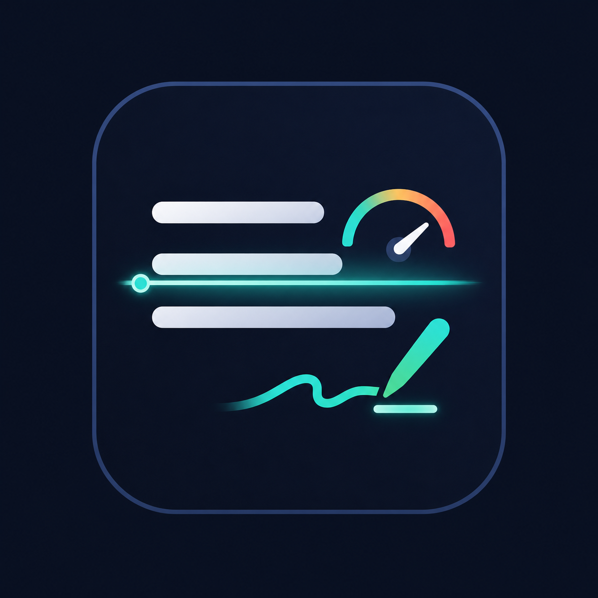

墨锋 InkEdge让作文训练
变成可持续的能力
面向中小学生的中文作文训练与文本改进平台。InkEdge 把“写不出来”拆成可以练习、反馈和复盘的步骤。

作文学习的难点，不在“有没有答案”
学生真正缺少的是把题目、素材、结构和表达连接起来的过程反馈。
起笔困难
面对题目不知道从哪里开始，真实经历无法转化为写作角度。
反馈断层
传统批改指出结果，却很少告诉学生下一步怎样练、怎样改。
能力不可见
一次作文的分数很难解释长期进步，家长也缺少连续记录。

这决定了产品以训练过程、可解释反馈和成长记录为核心。
一篇作文，拆成一条可完成的训练路径

产品设计原则
- 每一步都产生可保存的中间产物
- 反馈围绕下一次行动，而不是只给分数
- 模型负责提问、诊断和示范，学生保留表达主体

从一次写作工具，扩展为长期训练系统
作文训练工作台
作文构思、素材库、7 天训练计划、能力诊断和成长记录。
学习过程中小学生长期数据检测与改写工作台
AI 痕迹检测、作文体检、局部修改、参考稿对照和事实提醒。
文本质量可解释反馈编辑辅助

模型负责生成，产品负责约束和解释
InkEdge 不把模型输出直接交给用户，而是用本地规则、结构化合同和业务状态把结果变成可用的学习反馈。
主要技术链路
静态前端 → Express API → 业务模块 → OpenAI-compatible 模型 → 归一化结果 → D1 / 本地状态。
学生、家长、教师看到的是同一条成长链
学生
知道题目怎么拆、素材怎么选、段落怎么写，也能看到自己反复出现的问题。
家长
看到训练过程和能力变化，不必只依赖一次考试或一次作文分数。
教师与机构
可以把作文训练拆成任务，获得更稳定的过程数据和个性化辅导入口。

可持续使用的原因
- 每次作文都会留下结构化记录
- 下一次训练可以复用素材与反馈
- 产品价值从“生成一次结果”转向“持续提升”
账号、数据和 AI 使用边界，构成信任底座
账号绑定
邮箱验证码登录，作文会话、素材、训练计划、能力画像和成长记录绑定真实账号。
数据架构
本地使用 JSON 状态，Cloudflare 使用 D1 的通用状态表；保留业务状态的可迁移性。
AI 边界
训练模式强调提问、诊断、示范和局部修改，不默认代写整篇作文。
部署基础
Node.js + Express 单体架构，可部署到 Cloudflare Worker，已有健康检查与部署脚本。

商业化先围绕“持续训练价值”，而不是单次生成
当前项目暂不采用算力计费。后续商业模式可在验证留存和训练效果后设计。
家庭订阅
围绕个人成长档案、训练计划和长期反馈提供订阅服务。
学校 / 机构
面向班级或训练营提供任务编排、过程数据和教师辅助工具。
能力服务
在明确合规和隐私边界后，提供作文训练数据的分析与辅导服务。
需要继续验证的指标
训练完成率、7 天后回访率、同一用户的作文质量变化、家长或教师愿意付费的功能。
核心 MVP 已形成，下一阶段是质量收口
下一步：验证训练效果，建立可复制的增长路径
InkEdge 已经具备从单次作文到长期训练的产品骨架。下一阶段需要真实用户、真实训练数据和真实付费反馈。
希望获得的支持
产品试点学校或机构、教育场景顾问、真实用户测试样本，以及用于质量验证和商业化探索的资金支持。